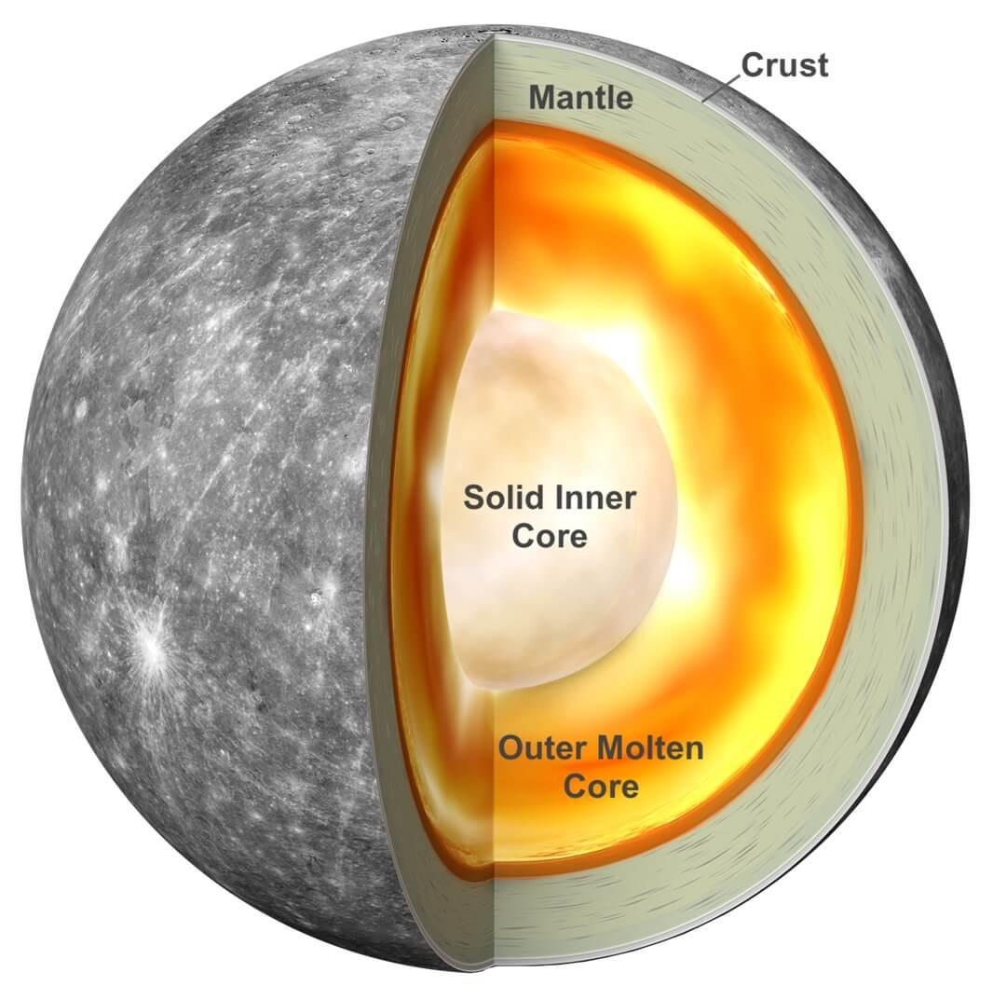

Fun Facts about the planet Mercury
- Mercury is the first planet from the sun and the smallest in the solar system. (About 3,032 miles or 4880 kilometers)
- The surface of Mercury is similar to Earth's moon.
- Takes only 88 days to orbit the Sun
- The temperature on Mercury is 870 Ferhenheit degrees (470 Celsilus), the lowest temperature is -300 Ferhenheit degrees (-184 Celsilus)
- Mercury dosen't have any moons

Day Side vs. Night Side
Day side: 470°C (870°F)